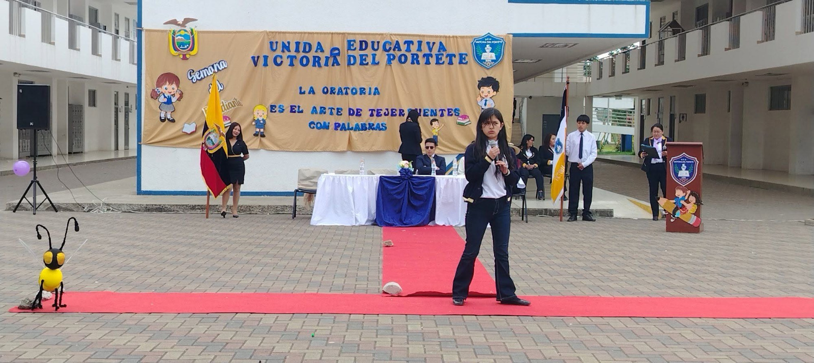

🎒 Vida Estudiantil
Clubes escolares, participación en concursos y testimonios de nuestra comunidad
Vida Estudiantil
📅 2025
✍️ Redacción GV
Clubes escolares: espacios de aprendizaje y talento
Los clubes escolares de la UEM Victoria del Portete son espacios extracurriculares donde los estudiantes desarrollan habilidades más allá del aula. Desde clubes de ciencias hasta grupos de arte y cultura, cada estudiante puede encontrar su pasión.
Participar en un club fortalece el trabajo en equipo, la creatividad y el liderazgo. Si eres estudiante de nuestra institución, animáte a unirte en el próximo período de inscripciones.
'" />


🎯'" />
Vida Estudiantil
📅 2025
✍️ Redacción GV
Participación en concursos intercolegiales 2025
Nuestros estudiantes han representado a la institución con orgullo en diversas competencias académicas y culturales a nivel cantonal y provincial durante el año lectivo 2025.
La participación en concursos fortalece las habilidades de nuestros estudiantes y posiciona a la UEM Victoria del Portete como institución de excelencia académica en la región.